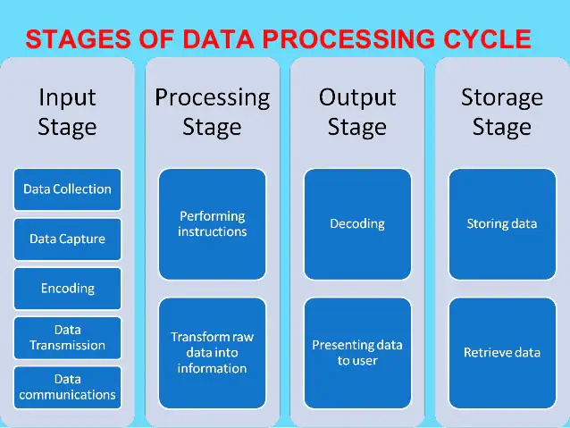

Introduction
Data procesing refers to the transformating raw data into meaningful output.
Data can be done manually using a pen and paper, mechanically using simple devices eg typewritter or electronically using modern dat processing toolseg computers
Data collection involves getting the data/facts needed for processing from the point of its origin to the computer
Data Input- the collected data is converted into machine-readable form by an input device, and send into the machine.
Processing is the transformation of the input data to a more meaningful form (information) in the CPU
Output is the production of the required information, which may be input in future.

The difference between data collection and data capture.
Data capture is the process of obtaining data in a computer-sensible form for at the point of origin (the source document itself is prepared in a machine-sensible form for input)
Data collectioninvolves getting the original data to the ‘processing centre’, transcribing it, converting it from one medium to another, and finally getting it into the computer.
Relevance of the term garbage in garbage out (GIGO) in reference to errors in data processing.
The accuracy of the data entered in the computer directly determines the accuracy of the information given out.
Give and explain two transcription and two computational errors committed during data processing.
Misreading errors: -they occur when the user reads source document incorrectly, thus entering wrong values, e.g. a user may confuse 5 in the number 586 with S, and type S86 instead.
Transposition errors:- they result from incorrect arrangement of characters (i.e., putting characters in the wrong order especially when keying data onto a diskette), e.g. the user may enter 396 instead of 369 computational errors
Overflow errors-An overflow occurs if the result from a calculation is too large to fit in the allocated memory space, e.g., if the allocated memory space is able to store an 8-bit character, then an overflow will occur if the result of the calculation gives a 9-bit number.
Underflow
Truncation: 0.784969 784
Rounding error:30.6666 7
Algorithm or ,logical errors
Data integrity.
br>
Data integrity refers to the dependability, timeliness, availability, relevance, accuracy & completeness of data/information
Threats to data integrity
Data integrity may be compromised through:
Human error, whether malicious or unintentional.
Transfer errors, including unintended alterations or data compromise during transfer from one device to another.
Bugs, viruses/malware, hacking, and other cyber threats
Compromised hardware, such as a device or disk crash.
Ways of minimizing threats to data integrity.
Backing up the data on external storage media
Enforcing security measures to control access to data
Using error detection & correction software when transmitting data
Designing user interfaces that minimize chances of invalid data being entered.
DATA PROCESSING METHODS
Data processing methods
1. Manual Data Processing
in manual data processingdata is processed manually without using any machine or tool to get required results. In manual data processing, all the calculations and logical operations are performed manually on the data. Similarly, data is transferred manually from one place to another. This method of data processing is very slow and errors may occur in the output. Mostly, is processed manually in many small business firms as well as government offices & institutions. In an educational institute, for example, marks sheets, fee receipts, and other financial calculations (or transactions) are performed by hand. This method is avoided as far as possible because of the very high probability of error, labor intensive and very time consuming. This type of data processing forms the very primitive stage when technology was not available or it was not affordable. With the advancement in technology the dependency on manual methods has drastically decreased.
2. Mechanical Data Processing
In mechanical data processing method, data is processed by using different devices like typewriters, mechanical printers or other mechanical devices. This method of data processing is faster and more accurate than manual data processing. These are faster than the manual mode but still forms the early stages of data processing. With invention and evolution of more complex machines with better computing power this type of processing also started fading away. Examination boards and printing press use mechanical data processing devices frequently.
3. Electronic Data Processing
Electronic data processing or EDP is the modern technique to process data. The data is processed through computer; Data and set of instructions are given to the computer as input and the computer automatically processes the data according to the given set of instructions. The computer is also known as electronic data processing machine.
a. Batch Processing
Batch Processing is a method where the information to be organized is sorted into groups to allow for efficient and sequential processing. Online Processing is a method that utilizes Internet connections and equipment directly attached to a computer. It is used mainly for information recording and research. Real-Time Processing is a technique that has the ability to respond almost immediately to various signals in order to acquire and process information. Distributed Processing is commonly utilized by remote workstations connected to one big central workstation or server. ATMs are good examples of this data processing method.
b. Online Processing
This is a method that utilizes Internet connections and equipment directly attached to a computer. This allows for the data stored in one place and being used at altogether different place. Cloud computing can be considered as a example which uses this type of processing. It is used mainly for information recording and research.
c. Real-Time Processing
This technique has the ability to respond almost immediately to various signals in order to acquire and process information. These involve high maintainance andupfront cost attributed to very advanced technology and computing power. Time saved is maximum in this case as the output is seen in real time. For example in banking transactions
Example of real time processing
Airline reservation systems
Theatre (cinema) booking
Hotel reservations
Banking systems
Police enquiry systems
Chemical processing plants
Hospitals to monitor the progress of a patient
Missile control systems
Advantages
Provides up-to-date information
The information is readily available for instant decision-making
Provides better services to users/customers.
Fast &reliable
Reduces circulation of hardcopies.
Disadvantages
Require complex Os & are very expensive
Not easy to develop
Real time systems usually use 2 or more processors to share the workloads, which is expensive.
Require large communication equipment.
d. Distributed Processing
This method is commonly utilized by remote workstations connected to one big central workstation or server. ATMs are good examples of this data processing method. All the end machines run on a fixed software located at a particular place and makes use of exactly same information and sets of instruction.
The Differentiate between CPU bound jobs and I/O bound jobs.
CPU bound jobs require more of the CPU time to process these jobs. Most of the work the I/O devices perform is on the Input; and Output; hence, they require very little CPU time.
Most companies are now shifting from the use of geographically distributed personal computers. This method of data processing is known asDistributed Data Processing (DDP)
Three computing resources that can be distributed.
-CPU (Processors) time
-Files
-Application software
-Data/information/messages
-Computer processing power
-Memory (computer storage)
- Input/Output devices, e.g. printers
-communication devices/communication port
Examples of industries and business organizations that extensively use distributed processing systems.
Banks
Computerized retails stores, e.g. supermarkets
Learning institutions with many departmental offices
Bureaus or communication cyber cafes
Airline reservation systems
Benefits and three risks that might be associated with the distributed data Processing system.
The load on the host computer is greatly reduced
The use of low cost minicomputers minimizes the cost in data processing
Delays in data processing are reduced
Provides better services to the customers
There is less risk in case of system breakdown
The design & implementation of the system is less complex due to decentralization
The level of expertise required is less.
Risks
Data duplication is very common
Programming problems occur with microcomputers & minicomputers
Security threats, i.e. the data & information sent one the network from one place to
another can be tapped, or listened to by unauthorized parties
More training is needed for the users involved
It is expensive due to the extra cost of communication equipment
The concept of multi-programming
A Multi-programming system allows the user to run 2 or more programs, all of which are in the computer’s main memory, at the same time.
Benefits that are derived from multi-programming
It increases productivity of a computer
Reduces the CPU’s idle time
Reduces the incidence of peripheral bound operation
Advantages of storing data in computer files over the manual filing system
Stored information takes up less space
Easier to update and modify
Provides faster access and retrieval of data
Reduces duplication of data or stored records
Cheaper
Enhances data integrity (i.e. accuracy and completeness)
The difference between logical and physical computer files.
A logical file is viewed in terms of what data items it contains and what processing operations may be performed on the data
A physical file is viewed in terms of how the data items found in a file are arranged on the storage media and how they can be processed.
Arrange the following components of the information system data hierarchy in ascending order of complexity: Field, Database, Byte, Record, Bit, and file
Bit Byte Field Record File Database
TYPES OF COMPUTER FILES
i) Report fileIt contains a set of relatively permanent records extracted from the data in a master file.
They are used to prepare reports, which can ve printed at a later date, e.g. report on student’s class performance in the term, extract of students who have not cleared their school fees, report on absentees
ii.) Backup file - Used to backup data or to hold duplicate copies of data/information from the computer’s fixed storage or main file for security purposes e.g. a copy of all the students admitted in a school fees, report on absentees
iii.)Reference file - Used for reference purposes. It contains records that are fairly permanent or semi-permanent, e.g. Deductions in caution money, wage rates, tax deductions, employees address, price lists etc.
iv.)Sort file – used to sort/rank data according to a given order, e.g. ranking position in a class of students.
v.)Transaction file - Is used to hold input data during transaction processing. It is later used to update master files and audits daily, weekly or monthly transaction.
FILE ORGANISATION METHODS
What is file organization?
- It is the way records are arranged (laid out) within a particular file or any secondary storage device in a computer
- Refers to the way data is stored in a file
- File organization is important because it determines the method of access, efficiency, flexibility and storage devices to be used.
Methods of file organization
i.)Sequential and serial
in sequentialfile organization, records are stored in a sorted order using a
key field, while in serial; the records are stored in the order they come into the file, and are not sorted in any way.
ii.)Random and indexed-sequential
In random file organization, records are stored in the file randomly and accessed directly, while in indexed –sequential, the records are stored sequentially but accessed directly using an index.
iii.)serial file organization
Records are in a file are stored and accessed one after another on a storage medium
iv.)Indexed sequencial file organization method
Similar to sequential method, only that an index is used to enable the computer to locate individual records on the storage media.
ELECTRONIC DATA PROCESSING MODES
This is the ways in which a computer under the influence of an operating system is designed to process data eg
a) Batch processing is the execution of a series of jobs in a program on a computer without manual intervention (non-interactive). Strictly speaking, it is a processing mode: the execution of a series of programs each on a set or "batch" of inputs, rather than a single input (which would instead be a custom job). However, this distinction has largely been lost, and the series of steps in a batch process are often called a "job" or "batch job".
Batch processing has these benefits:=
It can shift the time of job processing to when the computing resources are less busy.
It avoids idling the computing resources with minute-by-minute manual intervention and supervision.
By keeping high overall rate of utilization, it amortizes the computer, especially an expensive one.
It allows the system to use different priorities for interactive and non-interactive work
Rather than running one program multiple times to process one transaction each time, batch processes will run the program only once for many transactions, reducing system overhead.
Disadvantages
Users are unable to terminate a process during execution, and have to wait until execution completes.